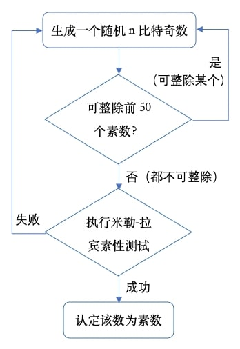

Python编程实现的教科书RSA
RSA加密算法是现代公钥密码学的核心技术之一，在互联网中应用广泛。作为公钥密码学的经典算法，教科书RSA的编程实现可以帮助我们迅速掌握其数学机理和设计思想，并积累重要的密码技术软件实现经验。这里详述Python3.8编程环境下教科书RSA的实现示例。
生成大素数
RSA加密算法的安全性建立在大数素因数分解的数学难题之上。构造RSA加密系统的第一步，就是生成两个大的素数\(p\)和\(q\)并计算模数\(N=pq\)。\(N\)就是RSA的密钥长度，越大越安全。现在实用的系统要求密钥长度不小于2048比特，对应的 \(p\)和\(q\)各为1024比特左右。生成如此大的随机素数，一种通用的实效方法是基于概率的随机化算法，其过程如下：
- 预选择设定比特长度的随机数
- 用小素数做初级素性检测 (埃拉托斯特尼筛法)
- 如果通过，继续第三步
- 如果失败，返回第一步
- 执行高级素性检测 (米勒-拉宾算法)
- 如果通过，输出认定的素数
- 如果失败，返回第一步
在这里的软件实现中，第一步可以直接生成奇数。同时出于演示的目的，第二步采用大于2的前50个素数做初级素性检测。整个过程如下面的流程图所示： 
第一步的Python函数编程，需要从random库导入库函数randrange()。函数将输入的比特数n设置为2的指数，用来指定randrange()的起始和结束值，并把步长定为2以确保只输出n比特数随机奇数值：
1 | from random import randrange |
第二步的代码很简单。先定义一个数组，元素是2以后的50个素数。然后在函数中用双循环实现初级素性检测，内部for循环用素数数组的元素逐个筛选，失败就马上中止回到外循环，再调用第一步的函数生成下一个候选奇数重新测试：
1 | # The first 50 prime numbers after 2 |
第三步的米勒-拉宾素性检验1，是当前普遍使用的一种素数判定法则。它利用随机化算法判断一个数是合数还是可能是素数。虽然同样基于费马小定理，米勒-拉宾素性检验比费马素性检验效率高得多。在展示米勒-拉宾素性检验的Python实现之前，简要介绍一下其工作原理。
根据费马小定理 ，对于一个素数\(n\) ，如果整数\(a\)不是\(n\)的倍数，则有\(a^{n-1}\equiv 1\pmod n\)。从这里出发，如果\(n>2\)，\(n-1\)是一个偶数，一定可以被表示为\(2^{s}*d\)的形式，\(s\)和\(d\)都是正整数且\(d\)是奇数。由此得到 \[a^{2^{s}*d}\equiv 1\pmod n\] 这时如果不断对上式左边取平方根再取模，总会得到\(1\)或\(-1\)2。如果得到了\(-1\) ，意味着下面②式成立；如果从未得到\(-1\)，则①式成立： \[a^{d}\equiv 1{\pmod {n}}{\text{ ①}}\] \[a^{2^{r}d}\equiv -1{\pmod {n}}{\text{ ②}}\] 其中\(r\)是位于\([0, s-1]\)区间的某个整数。所以，如果\(n\)是大于\(2\)的素数，一定有①或②式成立。这一规律的逆否命题也为真，即如果我们能找到这样一个\(\pmb{a}\)，使得对任意\(\pmb{0\leq r\leq s-1}\)以下两个式子均满足： \[\pmb{a^{d}\not \equiv 1\pmod n}\] \[\pmb{a^{2^{r}d}\not \equiv -1\pmod n}\] 那么\(\pmb{n}\)一定不是一个素数。这就是米勒-拉宾素性测试的机理。对于待测数\(n\)，算出\(s\)和\(d\)的值后，随机选取基数\(a\)，迭代检测以上两式。如果都不成立，\(n\)为合数，否则\(n\)可能为素数。重复这一过程，\(n\)为真素数的概率会越来越大。计算表明，经过\(k\)轮测试，米勒-拉宾素性检验的差错率最高不超过\(4^{-k}\)。
Python实现的米勒-拉宾素性检验函数如下，代码中的变量n,s,d,k与上面的说明对应：
1 | def miller_rabin_primality_check(n, k=20): |
综合以上所有，可以将整个过程包装到以下的函数，函数输入为比特数，输出为认定的随机大素数：
1 | def get_random_prime(num_bits): |
工具函数
最大公约数函数
gcd(a,b)和最小公倍数函数lcm(a,b)：
RSA加密算法需要计算模数\(N\)的卡迈克尔函数\(\lambda(N)\)，其公式是\(\lambda(pq)=\operatorname{lcm}(p − 1, q − 1)\)，这里用到了最小公倍数函数。最小公倍数与最大公约数的关系是：\[\operatorname{lcm}(a,b)={\frac{(a\cdot b)}{\gcd(a,b)}}\] 而求最大公约数有高效的欧几里得算法 (辗转相除法)，其原理是：两个整数的最大公约数等于其中较小的数和两数相除余数的最大公约数。欧几里得算法的具体实现可以使用迭代或递归方法。这里应用迭代实现最大公约数函数，两个函数的Python代码如下：1
2
3
4
5
6
7
8
9def gcd(a, b):
'''Computes the Great Common Divisor using the Euclid's algorithm'''
while b:
a, b = b, a % b
return a
def lcm(a, b):
"""Computes the Lowest Common Multiple using the GCD method."""
return a // gcd(a, b) * b扩展欧几里得算法
exgcd(a,b)和模逆元函数invmod(e,m)：
RSA密钥对满足等式\((d⋅e)\bmod \lambda(N)=1\)，即二者互为关于\(\lambda(N)\)的模逆元。应用扩展欧几里得算法可以快速求解公钥指数\(e\)的模逆元\(d\)。算法原理是给定整数\(a、b\)，可以在求得\(a、b\)的最大公约数的同时，找到整数\(x、y\) (其中一个很可能是负数)，使它们满足裴蜀等式：\[a⋅x+b⋅y=\gcd(a, b)\]代入RSA加密算法的参数\(a=e\)，\(b=m=\lambda(N)\)，又由于\(e\)与\(\lambda(N)\)互素，可以得到：\[e⋅x+m⋅y=1\]这样解出的\(x\)就是\(e\)的模逆元\(d\)。下面给出这两个函数的Python实现：同样地，这里应用了迭代方法实现扩展欧几里得算法，模逆元函数调用了前者。1
2
3
4
5
6
7
8
9
10
11
12
13
14
15
16
17
18
19
20
21
22
23
24def exgcd(a, b):
"""Extended Euclidean Algorithm that can give back all gcd, s, t
such that they can make Bézout's identity: gcd(a,b) = a*s + b*t
Return: (gcd, s, t) as tuple"""
old_s, s = 1, 0
old_t, t = 0, 1
while b:
q = a // b
s, old_s = old_s - q * s, s
t, old_t = old_t - q * t, t
a, b = b, a % b
return a, old_s, old_t
def invmod(e, m):
"""Find out the modular multiplicative inverse x of the input integer
e with respect to the modulus m. Return the minimum positive x"""
g, x, y = exgcd(e, m)
assert g == 1
# Now we have e*x + m*y = g = 1, so e*x ≡ 1 (mod m).
# The modular multiplicative inverse of e is x.
if x < 0:
x += m
return x整数与字节序列相互转换函数：
RSA加解密算法本身是操作于整数的模幂运算，而要加密的消息明文通常以字节序列表示，所以需要两个转换函数。加密时调用uint_from_bytes()先将字节序列转换为整数，再用公钥指数进行模幂运算；解密时次序相反，先用私钥指数进行模幂运算，再调用uint_to_bytes()将整数结果转换为字节序列，这样就可以恢复消息明文。Python实现的转换函数如下：1
2
3
4
5
6
7
8
9
10def uint_from_bytes(xbytes: bytes) -> int:
"""This works only for unsigned (non-negative) integers."""
return int.from_bytes(xbytes, 'big')
def uint_to_bytes(x: int) -> bytes:
"""This works only for unsigned (non-negative) integers.
It does not work for 0."""
if x == 0:
return bytes(1)
return x.to_bytes((x.bit_length() + 7) // 8, 'big')
实现RSA类
注意：教科书RSA有内在的安全漏洞。这里给出的Python语言参考实现仅用于学习和演示目的，不可用在实际的应用系统中，否则可能会造成严重的信息安全事故，切记！
基于面向对象的编程思想，可以设计将RSA的密钥数据和所有运算操作封装到一个Python类中。RSA类的解密和签名生成各自实现了常规和快速两种方法。快速方法基于中国余数定理和费马小定理 (参考《费马小定理的归纳法证明和应用》)。以下描述了RSA类的实现细节：
对象初始化函数
初始化函数__init__()的用户自定义参数和缺省值如下：- 密钥长度：2048 (\(N\))
- 公钥指数：65537 (\(e\))
- 快速解密/签名：False (不设定)
函数内部调用
get_random_prime()函数生成两个大约为密钥长度一半的随机大素数\(p\)和\(q\)，计算它们的卡迈克尔函数值并验证其是否与\(e\)互素，不是就重复直到找到为止。然后计算模数\(N\)和使用模逆元函数invmod()算出私钥指数\(d\)。如果需要快速解密/签名，还要计算出三个额外的参数： \[\begin{align} d_P&=d\bmod (p-1)\\ d_Q&=d\bmod (q-1)\\ q_{\text{inv}}&=q^{-1}\pmod {p} \end{align}\]1
2
3
4
5
6
7
8
9
10
11
12
13
14
15
16
17
18
19
20
21
22
23
24
25
26
27RSA_DEFAULT_EXPONENT = 65537
RSA_DEFAULT_MODULUS_LEN = 2048
class RSA:
"""Implements the RSA public key encryption/decryption with default
exponent 65537 and default key size 2048"""
def __init__(self, key_length=RSA_DEFAULT_MODULUS_LEN,
exponent=RSA_DEFAULT_EXPONENT, fast_decrypt=False):
self.e = exponent
self.fast = fast_decrypt
t = 0
p = q = 2
while gcd(self.e, t) != 1:
p = get_random_prime(key_length // 2)
q = get_random_prime(key_length // 2)
t = lcm(p - 1, q - 1)
self.n = p * q
self.d = invmod(self.e, t)
if (fast_decrypt):
self.p, self.q = p, q
self.d_P = self.d % (p - 1)
self.d_Q = self.d % (q - 1)
self.q_Inv = invmod(q, p)加解密成员函数
RSA加密和常规解密公式为 \[\begin{align} c\equiv m^e\pmod N\\ m\equiv c^d\pmod N \end{align}\] Python的内建指数函数pow()支持模幂运算，只需要先做相应的整数与字节序列转换，再使用公钥指数或私钥指数调用pow()就可以实现上面两式：对于快速解密，需要一些额外的步骤 \[\begin{align} m_1&=c^{d_P}\pmod {p}\tag{1}\label{eq1}\\ m_2&=c^{d_Q}\pmod {q}\tag{2}\label{eq2}\\ h&=q_{\text{inv}}(m_1-m_2)\pmod {p}\tag{3}\label{eq3}\\ m&=m_{2}+hq\pmod {pq}\tag{4}\label{eq4} \end{align}\] 实际中，如果上面\((3)\)式中的\(m_1-m_2<0\)，需要加上\(p\)调整为正数。还可以看到，由于快速解密方法的模数和指数都降阶大致一半，加速比理论上会接近\(4\)。考虑额外计算步骤，实际的加速比估计值要减掉一个修正值 \(\varepsilon\)，记为 \(4-\varepsilon\)。快速解密函数的代码如下：1
2
3
4
5
6
7def encrypt(self, binary_data: bytes):
int_data = uint_from_bytes(binary_data)
return pow(int_data, self.e, self.n)
def decrypt(self, encrypted_int_data: int):
int_data = pow(encrypted_int_data, self.d, self.n)
return uint_to_bytes(int_data)1
2
3
4
5
6
7
8
9
10
11
12def decrypt_fast(self, encrypted_int_data: int):
# Use Chinese Remaider Theorem + Fermat's Little Theorem to
# do fast RSA description
assert self.fast == True
m1 = pow(encrypted_int_data, self.d_P, self.p)
m2 = pow(encrypted_int_data, self.d_Q, self.q)
t = m1 - m2
if t < 0:
t += self.p
h = (self.q_Inv * t) % self.p
m = (m2 + h * self.q) % self.n
return uint_to_bytes(m)签名生成和验证成员函数
RSA数字签名的生成和验证函数与加密和常规解密很相似，不同的只是将公钥指数和私钥指数对调使用而已。签名生成使用私钥指数，而验证函数使用公钥指数。快速签名的实现与快速解密步骤一致，但是输入和输出的数据要做相应的转换调整。具体的实现如下：1
2
3
4
5
6
7
8
9
10
11
12
13
14
15
16
17
18
19
20
21
22
23
24def generate_signature(self, encoded_msg_digest: bytes):
"""Use RSA private key to generate Digital Signature for given
encoded message digest"""
int_data = uint_from_bytes(encoded_msg_digest)
return pow(int_data, self.d, self.n)
def generate_signature_fast(self, encoded_msg_digest: bytes):
# Use Chinese Remaider Theorem + Fermat's Little Theorem to
# do fast RSA signature generation
assert self.fast == True
int_data = uint_from_bytes(encoded_msg_digest)
s1 = pow(int_data, self.d_P, self.p)
s2 = pow(int_data, self.d_Q, self.q)
t = s1 - s2
if t < 0:
t += self.p
h = (self.q_Inv * t) % self.p
s = (s2 + h * self.q) % self.n
return s
def verify_signature(self, digital_signature: int):
"""Use RSA public key to decrypt given Digital Signature"""
int_data = pow(digital_signature, self.e, self.n)
return uint_to_bytes(int_data)
功能测试
完成了RSA类，就可以进行测试了。为测试基本的加解密功能，先初始化一个RSA对象，初始化参数为：
- 密钥长度：512比特 (模数\(N\))
- 公钥指数：3
- 快速解密/签名：True (设定)
接下来就可以调用RSA对象实例的加密函数encrypt()加密定义好的消息，然后将密文分别输入到解密函数decrypt()和快速解密函数decrypt_fast()，并用assert语句比较结果和消息原文。代码如下：
1 | # ---- Test RSA class ---- |
同理，还可以测试签名功能。这时需要把下面import语句添加到文件首部
1 | from hashlib import sha1 |
这样就可以用库函数sha1()生成消息摘要，然后分别调用RSA对象实例的generate_signature() 函数和generate_signature_fast()函数产生签名。两个签名输入到验证函数verify_signature()得到的结果应该都与原消息摘要一致。如下所示：
1 | mdg = sha1(msg).digest() |
如果没有看到报告AssertionError，就会得到下面的输出，表明加解密和签名测试都通过了：
1 | RSA message encryption/decryption test passes! |
性能测试
功能测试通过之后，可以来看看快速解密的性能如何。我们关心的是实际能达到的加速比是多少，这就需要对代码的执行计时。计时测量要从Python内建库os和timeit分别导入库函数urandom()和timeit()：
1 | from os import urandom |
urandom()用于产生随机字节序列，timeit()提供了对给定代码段的执行计时功能。作为辅助，先将要计时的RSA解密函数打包在两个函数中:
decrypt_norm()- 常规解密方法decrypt_fast()- 快速解密方法
两个函数都用assert语句核对结果，代码如下：
1 | def decrypt_norm(tester, ctxt: bytes, msg: bytes): |
计时代码设置两个嵌套的for循环：
外层循环遍历不同的密钥长度
klen，从512比特到4096比特共5级，相应的RSA对象obj初始化为：- 密钥长度：
klen(模数\(N\)) - 公钥指数：65537
- 快速解密/签名：True (设定)
外层循环里也设定变量
rpt为密钥长度的平方根，并清零计时变量t_n和t_f。- 密钥长度：
内层也循环5次，每次执行的操作是：
- 调用
urandom()生成比特长度为密钥长度一半、内容随机的字节序列mg - 调用加密函数
obj.encrypt()生成密文ct - 调用
timeit()并分别输入打包函数decrypt_norm()和decrypt_fast()及解密相关的参数obj、ct和mg，同时设置代码重复运行次数为rpt timeit()函数的返回值累加保存到t_n和t_f
- 调用
每次内层循环结束，就打印当前的密钥长度、计时统计的均值和计算出来的加速比t_n/t_f。对应的实际程序段如下：
1 | print("Start RSA fast decryption profiling...") |
下面是在Macbook Pro上的运行结果：
1 | Start RSA fast decryption profiling... |
测试结果证实了快速解密方法的有效性。随着密钥长度的增加，计算强度逐渐加大，核心解密运算所占的运行时间比重也更突出，所以加速比对应增长。但最终加速比趋于稳定值3.5左右，这与理论估计的上界 (\(4-\varepsilon\)) 相一致。
教科书RSA的Python编程实现，帮我们强化了所学的基础数论知识，也有助于深入理解RSA加密算法的机理。在此基础上，参考前文《RSA的攻与防（一）》，还可以扩展试验一些RSA初级攻防技巧，进一步掌握这一公钥密码学的关键技术。完整的程序点击这里下载：textbook-rsa.py.gz
卡内基梅隆大学的计算机系教授加里·米勒 (Gary Lee Miller) 首先提出了基于广义黎曼猜想的确定性算法，由于广义黎曼猜想并没有被证明，其后由以色列耶路撒冷希伯来大学的迈克尔·拉宾 (Michael O. Rabin) 教授作出修改，提出了不依赖于该假设的随机化算法。↩︎
这是因为从 \(x^2\equiv 1\pmod n\) 可以推导出 \((x-1)(x+1)=x^{2}-1\equiv 0\pmod n\)，又由于\(n\)是素数，根据欧几里得引理，它必然整除 \(x-1\) 和 \(x+1\)其中的一个，所以 \(x\bmod n\) 一定是 \(1\) 或 \(-1\)。↩︎